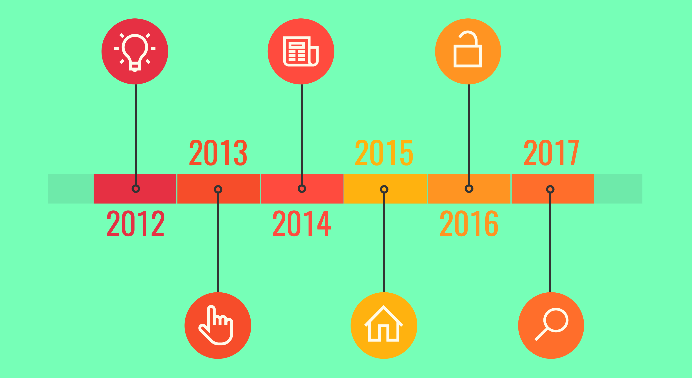

La línea del tiempo es la representación gráfica de periodos cortos, medianos o largos (años, lustros, décadas, siglos, milenios, por ejemplo).
En una línea puedes representar la duración de los procesos, hechos, acontecimientos y darte cuenta de cuálese relacionan y en qué momento se produjeron. suceden al mismo tiempo, cuánto tiempo duran.
